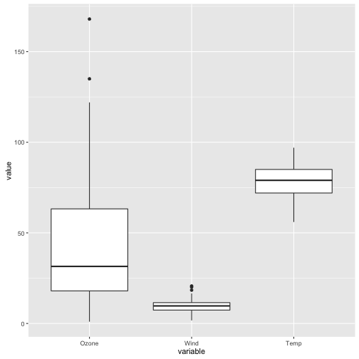

ANOVA as Regression
- Does dose (placebo, low or high) predict libido? (regression-speak)
- Can also say: is libido in these 3 groups significantly different? (ANOVA-speak)

Jenna Blumenthal
Tutorial #: 6
MIE 1402
Allows us to compare the means of three or more groups without inflating the error (see Field, pg 399)
Eg inflating the error:
Produces an \(F\)-statistic, which compares the systematic variance to the unsystematic variance
| person | dose | libido |
|---|---|---|
| 1 | Placebo | 3 |
| 2 | Placebo | 2 |
| 3 | Placebo | 1 |
| 4 | Placebo | 1 |
| 5 | Placebo | 4 |
| 6 | Low Dose | 5 |
| 7 | Low Dose | 2 |
| 8 | Low Dose | 4 |
| 9 | Low Dose | 2 |
| 10 | Low Dose | 3 |
| 11 | High Dose | 7 |
| 12 | High Dose | 4 |
| 13 | High Dose | 5 |
| 14 | High Dose | 3 |
| 15 | High Dose | 6 |
We can set our regression equation to:
\(libido_{i} = b_{0} + b_{2high_{i}} + b_{1low_{i}} + \epsilon_{i}\)
Where:
\(b_0 = \overline{X}_{placebo}\)
\(b_1 = \overline{X}_{low dose} - \overline{X}_{placebo}\)
\(b_2 = \overline{X}_{high dose} - \overline{X}_{placebo}\)
lm.1 <- lm(libido ~ dose, data = data)
Moral of the story: ANOVA can always be represented by the multiple regression equation in which the # of predictor variables is one less than the # of categories of the independent variable.

viagraModel <- aov(libido ~ dose, data = data)
summary(viagraModel)
## Df Sum Sq Mean Sq F value Pr(>F)
## dose 2 20.13 10.067 5.119 0.0247 *
## Residuals 12 23.60 1.967
## ---
## Signif. codes: 0 '***' 0.001 '**' 0.01 '*' 0.05 '.' 0.1 ' ' 1
Two approaches:
Planned contrasts: break down variance accounted for by the model into component parts (specific hypothesis)
Post hoc tests: compare every group but use a stricter acceptance criterion (no specific hypothesis)
summary.lm(viagraModel)
##
## Call:
## aov(formula = libido ~ dose, data = data)
##
## Residuals:
## Min 1Q Median 3Q Max
## -2.0 -1.2 -0.2 0.9 2.0
##
## Coefficients:
## Estimate Std. Error t value Pr(>|t|)
## (Intercept) 2.2000 0.6272 3.508 0.00432 **
## doseLow Dose 1.0000 0.8869 1.127 0.28158
## doseHigh Dose 2.8000 0.8869 3.157 0.00827 **
## ---
## Signif. codes: 0 '***' 0.001 '**' 0.01 '*' 0.05 '.' 0.1 ' ' 1
##
## Residual standard error: 1.402 on 12 degrees of freedom
## Multiple R-squared: 0.4604, Adjusted R-squared: 0.3704
## F-statistic: 5.119 on 2 and 12 DF, p-value: 0.02469
contrasts(data$dose)
## Low Dose High Dose
## Placebo 0 0
## Low Dose 1 0
## High Dose 0 1
contrast_1 <- c(-2,1,1) # placebo vs viagra
contrast_2 <- c(0,-1,1) # high vs low
contrasts(data$dose) <- cbind(contrast_1, contrast_2)
## contrast_1 contrast_2
## Placebo -2 0
## Low Dose 1 -1
## High Dose 1 1

Benefit of using ANOVA is you can look at the effect of more than one independent variable, and how they interact
In R:
aov_model <- aov(outcome ~ predictor1*predictor2, data = data_frame)
Field A, Miles J, Field Z. Discovering Statistics Using R. London: Sage; 2012.
/
#